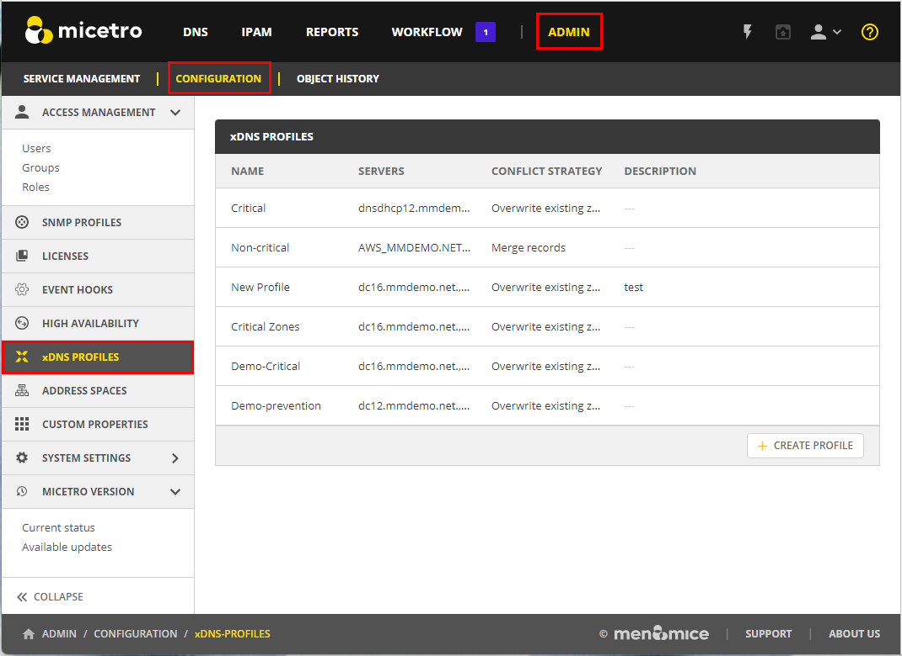
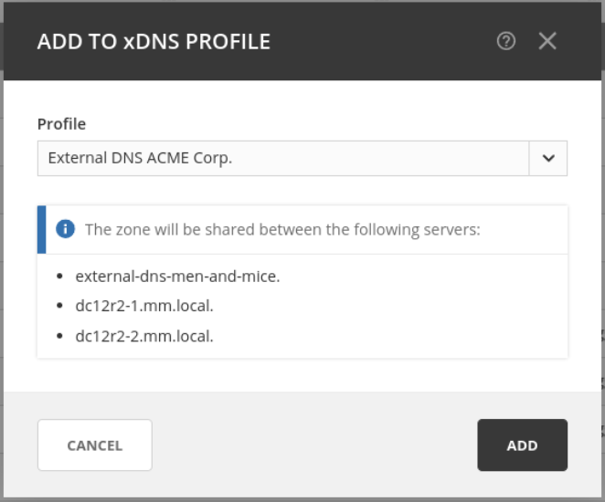
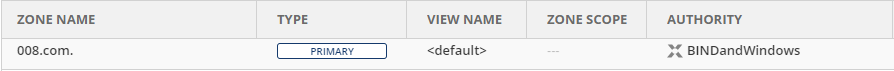
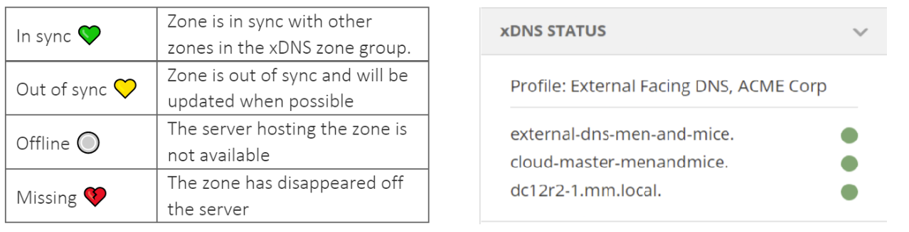

xDNS Redundancy
The xDNS (Cross-Domain Name System) redundancy feature helps ensure the availability and reliability of your DNS infrastructure. It allows you to create backup DNS configurations, so if one DNS server or service fails, another can seamlessly take over, ensuring uninterrupted access to your websites or services.
Creating Redundancy Groups: With xDNS profiles, you can create groups that consist of multiple DNS servers and services. These groups are designed to manage the authority of a specific list of DNS zones.
Identical Zone Content: Once you’ve set up an xDNS redundancy group, the system assists you in generating identical copies of the DNS zone content across multiple primary zones. This replication ensures that all zones within the group are the same in every aspect.
Flexibility: As your needs evelove, you can add or romeve zones from the xDNS profile.
To access xDNS profiles:
Go to the Admin page.
Select Configuration in the upper-left corner.
Select xDNS Profiles in the filtering sidebar on the left-hand side.

{kind=link}
xDNS Profiles
xDNS Profiles group together two or more DNS services that share the the authority of a list of zones. Any changes made to these zones, within or outside of Micetro, are automatically synchronized across all DNS services within the profile. In case of conflicts, Micetro has a built-in conflict resolution strategy to handle them.
Creating/Modifying xDNS Profiles
To create or edit an xDNS profile, you must have administrative access within Micetro to the DNS Services you want to include.
To create a new profile, click Create Profile in the lower-rigt corner of the xDNS Profiles list.
To edit a profile, select the relevant profile, and then select Edit profile on the Row … menu. You can also double-click the profile.
Each profile has the following properties:
Name: A unique identifier for the profile.
Description: An optional field to describe the purpose of the xDNS profile.
Conflict Strategy: Determines whether Micetro overwrites or merges record conflicts that may arise during synchronization. This also serves as the default when adding new zones to the profile.
Overwrite existing zones: If a zone with the same name exists on any other DNS service included in the xDNS profile, its records will be overwritten with the record data from the zone instance being added to the xDNS profile.
Merge records: If a zone with the same name exists on any secondary service, its contents will be merged with the contents of the zone on the primary service.
Servers: At least two DNS services must be added to the profile. Each service can also be configured to reject external changes. This means changes to record data made on one service outside of Micetro will not be replicated by xDNS to other services.
Note
The list of servers cannot be changed after the profile has been created
Configuring TTL for DNS Records in xDNS Profiles
You can specify the default Time-to-Live (TTL) for DNS records created within zones for all xDNS profiles. This setting determines how long DNS information remains cached by DNS resolvers before requesting updated data.
Go to the Admin page.
Select Configuration in the upper left corner.
Under System Settings in the filtering sidebar, select Advanced.
Enter your desired TTL value in the appropriate text box.
Deleting xDNS Profiles
To delete an xDNS profile, you must have administrative access within Micetro to all DNS services within the profile.
When an xDNS profile is deleted, each service retains a copy of the zones from the profile, but replication between them will stop.
To delete a profile, select the relevant profile, and then select Delete profile on the Row … menu. You can also double-click the profile.
Adding Zones to xDNS Profiles
To add a DNS zone to an xDNS profile, you must have “create zone access” on all DNS services included in the xDNS profile. xDNS profiles initially do not include any zones.
To add zones to xDNS profiles:
Go to the DNS page.
In the filtering sidebar, select Primary Zones, if not already selected. xDNS only supports primary zones.
On the Actions menu, select Add to xDNS profile. You can also select this option on the Row … menu.
When a profile is selected on the Profile menu, Micetro runs preflight checks and displays any warnings or potential errors that are detected.
{kind=link}
{kind=link}
Adding a zone to xDNS will, if necessary, create zone instances on other DNS services included in the selected profile and add delegation records. Afterward, other record data from the source zone will be replicated to the newly created zone instances.
The overview grid for DNS zones will display only one instance, with the authority column showing the name of the profile to which the zone has been added.
{kind=link}
xDNS Status on Zones
You can monitor the status of xDNS zones in the inspector. Each underlying zone instance is represented by the name of the DNS service and a traffic light indicator.
{kind=link}
Multiselecting is supported if all xDNS zones belong to the same profile, with each entry showing the aggregate state of the zone instances on each DNS service. If zones from multiple profiles are selected, the xDNS status section will be hidden.
Removing Zones from xDNS Profiles
Removing a zone stops all replication between zone instances on each DNS service. Delegation remains unchanged, and no zone instances are deleted.
xDNS zones and the API
xDNS zones are represented as single instances in the API, with the Authority value denoting the profile they belong to. Individual zone instances remain accessible, for example by calling GetDNSZones and filtering for each DNS service via the dnsServerRef parameter.